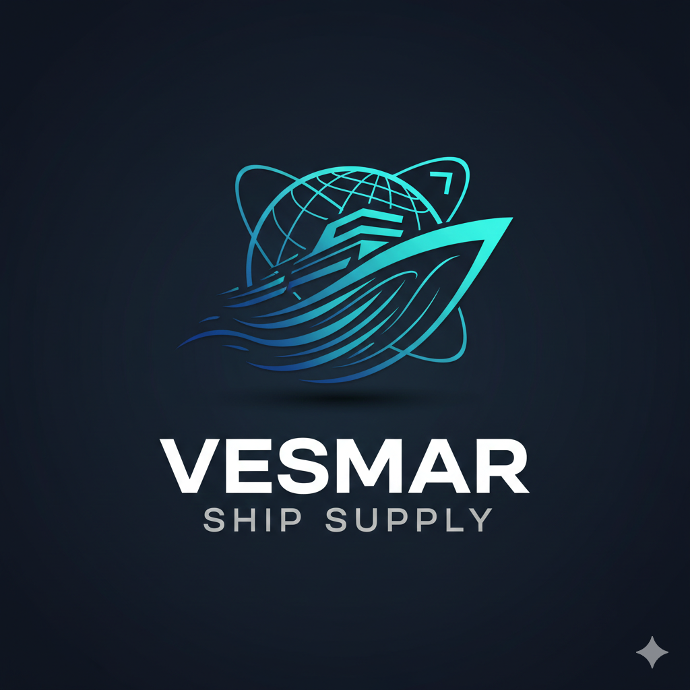
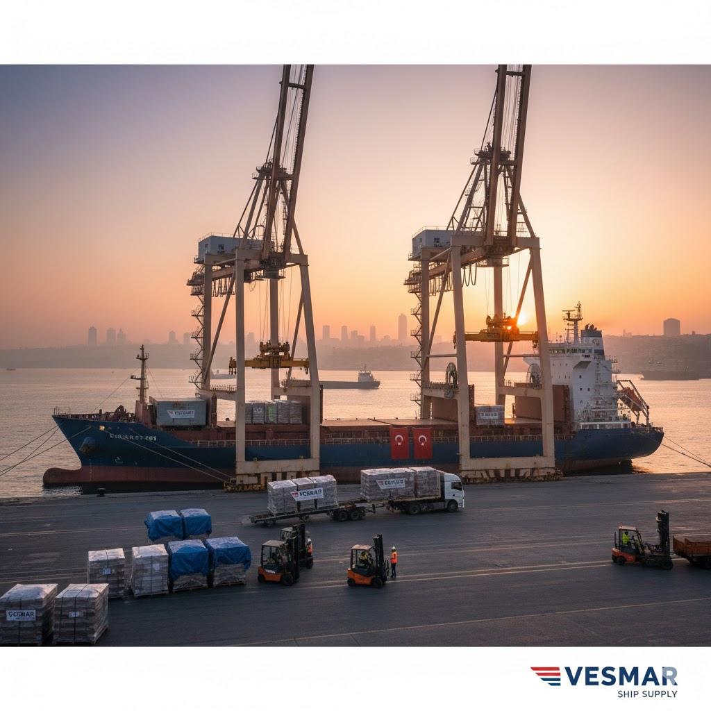
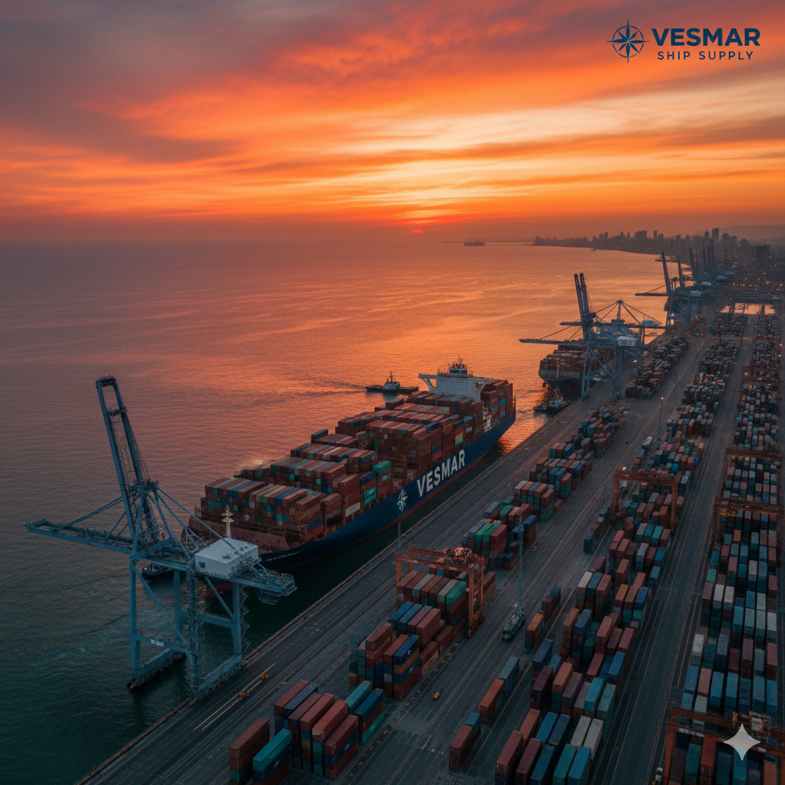

VESMARGüven, deneyim ve çözüm ilkesiyle tüm Türk limanlarında kesintisiz denizcilik çözümleri.
2014'ten beri tecrübemizle, gemilerinizin ihtiyacı olan kumanya, teknik malzeme, yedek parça ve lojistik desteği tüm Türk limanlarında 7/24 sağlıyoruz. Güven, hız ve kalite bizim rotamızdır.
Geminiz için tedarik edilen tüm malzemelerin, zamanında ve hasarsız bir şekilde, belirlenen liman veya demirleme sahasına ulaştırılmasını sağlıyoruz. Türkiye içindeki her noktaya özel araçlarımızla hızlı ve güvenli teslimat yapmaktayız.
Mürettebatın tüm beslenme ihtiyaçları (taze, kuru, dondurulmuş kumanya) uluslararası hijyen standartlarında temin edilir. Kabin malzemeleri, temizlik ürünleri ve ofis sarf malzemeleri de titizlikle tedarik edilmektedir.
Makine dairesi, güverte, elektrik ve elektronik ekipmanlar için gerekli her türlü teknik yedek parça ve malzeme tedariği. Sektördeki geniş ağımız sayesinde nadir bulunan parçalar bile hızlıca bulunur ve gemiye ulaştırılır.
Yangın söndürme ekipmanları, ilk yardım kitleri, can yelekleri gibi zorunlu güvenlik malzemeleri ile birlikte, geminin uzun ömürlü olması için gerekli olan boya, halat, temizlik kimyasalları ve bakım ürünlerinin tedariği.


İhtiyaç duyduğunuz tedarik veya lojistik çözümleri için formu doldurarak veya aşağıdaki iletişim kanallarını kullanarak ekibimize 7/24 ulaşabilirsiniz.
Vesmar Ship Supply, 2014 yılında İstanbul'da kurulmuş olup, denizcilik sektörüne kesintisiz ve güvenilir tedarik çözümleri sunma misyonuyla yola çıkmıştır. Kuruluşumuzdan bu yana temel ilkelerimiz; hız, güvenilirlik ve müşteri odaklı çözümler olmuştur. Türkiye'nin tüm liman ve boğaz geçiş noktalarında gemilerin ihtiyaç duyduğu her türlü kumanya, teknik malzeme ve lojistik desteği 7/24 sağlıyoruz.
Bu belge, Vesmar Ship Supply (VES-MAR) tarafından sunulan tüm hizmet ve ürün tedarik süreçlerini yöneten yasal çerçeveyi tanımlar. Hizmetlerimizi kullanmadan önce lütfen şartları dikkatlice okuyunuz.
Tedarik edilen tüm ürünler ve hizmetler, müşterinin talebi üzerine hazırlanan ve karşılıklı teyit edilen proforma fatura/teklif fiyatları üzerinden ücretlendirilir. Fiyatlar, teslimat anındaki güncel döviz kurları ve pazar koşullarına bağlı olarak değişiklik gösterebilir.
VES-MAR, ürünlerin gemiye güvenli ve zamanında teslimatından sorumludur. Teslimatın gerçekleşememesi (hava koşulları, liman kısıtlamaları vb.) durumunda müşteri derhal bilgilendirilir ve alternatif çözüm üretilir.
Özel sipariş edilen veya taze gıda niteliğindeki kumanyaların iptali, siparişin onaylanmasından sonra kabul edilmeyebilir. Teknik malzemelerde iade şartları, tedarikçi firmanın garanti ve iade koşullarına tabidir.
VES-MAR olarak, müşterilerimizin ve iş ortaklarımızın kişisel verilerinin korunmasına büyük önem veriyoruz. Bu politika, hangi verileri topladığımızı ve bunları nasıl kullandığımızı açıklar.
VES-MAR, web sitesinin ve hizmetlerinin herkes tarafından erişilebilir olmasını sağlamayı taahhüt eder. Web içeriği erişilebilirlik standartlarına (WCAG) uygunluk için çaba gösteriyoruz.
Sitemizdeki tüm görseller, bağlantılar ve form öğeleri, ekran okuyucu kullanıcıları için anlamlı metinlerle (alt metinler, aria etiketleri) tasarlanmıştır.
Site navigasyonu ve interaktif bileşenler, fare kullanılamayan kullanıcılar için klavye tabanlı gezinmeyi destekleyecek şekilde sekme sırasına göre optimize edilmiştir.
Tasarımımız, görme engelli veya renk körü kullanıcıların metinleri kolayca okuyabilmesi için yeterli renk kontrast oranlarını korur.